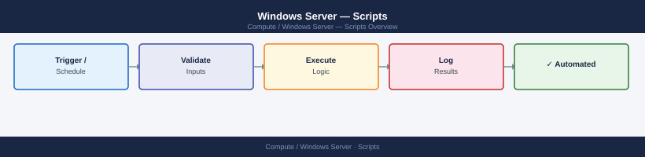

Windows Server — Scripts¶

Windows Server PowerShell scripts — remote health checks across multiple servers, certificate expiry monitoring, service health monitoring, script runner with logging, and module management.
 ## Before you begin
- **Access:** Local Administrator or Domain Admin on target hosts
- **Timing:** safe to run during business hours unless a step is marked ⚠ (causes interruption)
- **Dependencies:** no active upgrades or migrations on the same infrastructure
- **Logging:** capture command output — paste into the change record on completion
---
## Script Deployment and Scheduling
## Event Log Query
Extracts events matching specific IDs for incident investigation.
## Patch Status Report
Reports installed and missing patches for a list of servers.
## Remote Health Check Topology
### How to run this script — step by step
**Before you start — what you need**
- Windows PowerShell 5.1 or PowerShell 7
- WinRM enabled on the servers to scan (for remote scanning — or run locally by passing `localhost` as the server)
- SMTP server details if you want email alerts
- Admin access on the servers being scanned
**Step 1 — Save the file**
1. Open **Notepad** (Windows key → search for Notepad)
2. Copy the entire code block above
3. Click **File → Save As**
4. Set "Save as type" to **All Files**
5. Name it `cert-expiry-monitor.ps1` and save to your Desktop
**Step 2 — Fill in your details**
Parameters are passed on the command line:
| Parameter | What to enter | Example |
|---|---|---|
| `-Servers` | Comma-separated server names/IPs | `webserver01,webserver02` |
| `-WarnDays` | Days before expiry to warn | Default: `30` |
| `-CritDays` | Days before expiry for critical alert | Default: `14` |
| `-SmtpServer` | Your SMTP server address | `smtp.yourcompany.com` |
| `-AlertEmail` | Email address to send alerts to | `ops@yourcompany.com` |
**Step 3 — Open the right terminal**
- **For .ps1 (PowerShell):** Windows key → `PowerShell` → right-click → **Run as Administrator**
**Step 4 — Allow scripts to run (one-time per session)**
**Step 5 — Run it**
**What you should see**
A table showing every certificate found on each server, sorted by days remaining. CRITICAL certificates (expiring soon) appear first. The summary line shows counts of CRITICAL vs WARNING. If any alerts are found and SMTP is configured, an email is sent.
---
## Service Health Monitor (PowerShell)
Check that required services are running across a server fleet. Optionally attempt automatic restart for stopped services. Exits with a monitoring-compatible code.
### How to run this script — step by step
**Before you start — what you need**
- Windows PowerShell 5.1 or PowerShell 7
- WinRM enabled on the servers you want to check
- Admin access to start/stop services if you want to use `-AttemptRestart`
**Step 1 — Save the file**
1. Open **Notepad** (Windows key → search for Notepad)
2. Copy the entire code block above
3. Click **File → Save As**
4. Set "Save as type" to **All Files**
5. Name it `service-health-monitor.ps1` and save to your Desktop
**Step 2 — Fill in your details**
Edit the `$ServiceMap` section inside the script to match your environment:
| Section | What to enter | Where to find it |
|---|---|---|
| Server names (e.g. `'webserver01'`) | Your actual server names or IPs | Your server list |
| Service names (e.g. `'W3SVC'`) | The service names to check on each server | Run `Get-Service` on the server to see all service names |
**Step 3 — Open the right terminal**
- **For .ps1 (PowerShell):** Windows key → `PowerShell` → right-click → **Run as Administrator**
**Step 4 — Allow scripts to run (one-time per session)**
**Step 5 — Run it**
To also try restarting any stopped automatic services:
**What you should see**
Timestamped log lines as each service is checked. A summary table shows every server/service combination with its status. Any stopped automatic services are highlighted in red. The script exits with code 0 (all running), 1 (some stopped), or 2 (errors connecting). A log file is also saved.
---
## Windows: PowerShell Script Runner with Logging (CMD Batch)
A batch file that launches any PowerShell script, logs all output to a timestamped file, and shows it in the console at the same time. Useful for running scripts on a schedule or double-clicking from your Desktop.
### How to run this script — step by step
**Before you start — what you need**
- Windows PowerShell (already on Windows 10/11)
- The PowerShell script you want to run saved in the same folder as this batch file
- The `C:\Logs\` folder (the batch file creates it automatically if it doesn't exist)
**Step 1 — Save the file**
1. Open **Notepad** (Windows key → search for Notepad)
2. Copy the entire code block above
3. Click **File → Save As**
4. Set "Save as type" to **All Files** (important — prevents Notepad adding .txt)
5. Name it `ps-runner.bat` and save to your Desktop
**Step 2 — Fill in your details**
Open the saved file and update these values near the top:
| Variable | What to enter | Where to find it |
|---|---|---|
| `PS_SCRIPT` | Filename of the PowerShell script to run, e.g. `windows-health-check.ps1` | The `.ps1` file you want to run (must be in the same folder as this batch file) |
| `LOG_DIR` | Folder where log files are saved | Default: `C:\Logs` — will be created automatically |
**Step 3 — Open the right terminal**
- **For .bat / .cmd:** Open Command Prompt or just double-click the file
**Step 4 — Run it**
Or just double-click the file from your Desktop.
**What you should see**
The PowerShell script runs and its output appears in the Command Prompt window in real time. At the same time, everything is saved to a timestamped log file in `C:\Logs\`. When it finishes, the window shows either "completed successfully" or "FAILED" and tells you where the log file is. The window stays open so you can read it.
---
## Windows: PowerShell Module Auto-Installer (PowerShell)
Automatically check and install the PowerShell modules most commonly needed for infrastructure work. Includes an example of using Posh-SSH for SSH connections from PowerShell.
### How to run this script — step by step
**Before you start — what you need**
- Windows PowerShell 5.1 or PowerShell 7
- Internet access so PowerShell can download modules from the PowerShell Gallery
- Running as Administrator gives system-wide install; without it installs for your user only
**Step 1 — Save the file**
1. Open **Notepad** (Windows key → search for Notepad)
2. Copy the entire code block above
3. Click **File → Save As**
4. Set "Save as type" to **All Files** (important — prevents Notepad adding .txt)
5. Name it `Install-InfraModules.ps1` and save to your Desktop
**Step 2 — Fill in your details**
The `$RequiredModules` list near the top can be edited to add or remove modules:
| Field | What to enter | Example |
|---|---|---|
| `Name` | PowerShell module name from the Gallery | `"Az"` |
| `MinVersion` | Minimum version you need | `"10.0.0"` |
**Step 3 — Open the right terminal**
- **For .ps1 (PowerShell):** Windows key → `PowerShell` → right-click → **Run as Administrator**
**Step 4 — Allow scripts to run (one-time per session)**
**Step 5 — Run it**
**What you should see**
A table showing each module with its required version, currently installed version, and status (OK, Outdated, or Missing). Any missing or outdated modules are automatically downloaded and installed. At the end, an example snippet shows how to use Posh-SSH to connect to a Linux server directly from PowerShell.
---
---
## Verify
- Confirm the operation completed without errors in the log or management UI
- Verify the expected state change is visible (service running, object created, config applied)
- Document the outcome in the change record
---
## See also
- [Windows Server — Procedures](../procedures/)
- [Windows Server — CLI Reference](../cli-reference/)
- [Windows Server — Health Checks](../health-checks/)
## Before you begin
- **Access:** Local Administrator or Domain Admin on target hosts
- **Timing:** safe to run during business hours unless a step is marked ⚠ (causes interruption)
- **Dependencies:** no active upgrades or migrations on the same infrastructure
- **Logging:** capture command output — paste into the change record on completion
---
## Script Deployment and Scheduling
## Event Log Query
Extracts events matching specific IDs for incident investigation.
## Patch Status Report
Reports installed and missing patches for a list of servers.
## Remote Health Check Topology
### How to run this script — step by step
**Before you start — what you need**
- Windows PowerShell 5.1 or PowerShell 7
- WinRM enabled on the servers to scan (for remote scanning — or run locally by passing `localhost` as the server)
- SMTP server details if you want email alerts
- Admin access on the servers being scanned
**Step 1 — Save the file**
1. Open **Notepad** (Windows key → search for Notepad)
2. Copy the entire code block above
3. Click **File → Save As**
4. Set "Save as type" to **All Files**
5. Name it `cert-expiry-monitor.ps1` and save to your Desktop
**Step 2 — Fill in your details**
Parameters are passed on the command line:
| Parameter | What to enter | Example |
|---|---|---|
| `-Servers` | Comma-separated server names/IPs | `webserver01,webserver02` |
| `-WarnDays` | Days before expiry to warn | Default: `30` |
| `-CritDays` | Days before expiry for critical alert | Default: `14` |
| `-SmtpServer` | Your SMTP server address | `smtp.yourcompany.com` |
| `-AlertEmail` | Email address to send alerts to | `ops@yourcompany.com` |
**Step 3 — Open the right terminal**
- **For .ps1 (PowerShell):** Windows key → `PowerShell` → right-click → **Run as Administrator**
**Step 4 — Allow scripts to run (one-time per session)**
**Step 5 — Run it**
**What you should see**
A table showing every certificate found on each server, sorted by days remaining. CRITICAL certificates (expiring soon) appear first. The summary line shows counts of CRITICAL vs WARNING. If any alerts are found and SMTP is configured, an email is sent.
---
## Service Health Monitor (PowerShell)
Check that required services are running across a server fleet. Optionally attempt automatic restart for stopped services. Exits with a monitoring-compatible code.
### How to run this script — step by step
**Before you start — what you need**
- Windows PowerShell 5.1 or PowerShell 7
- WinRM enabled on the servers you want to check
- Admin access to start/stop services if you want to use `-AttemptRestart`
**Step 1 — Save the file**
1. Open **Notepad** (Windows key → search for Notepad)
2. Copy the entire code block above
3. Click **File → Save As**
4. Set "Save as type" to **All Files**
5. Name it `service-health-monitor.ps1` and save to your Desktop
**Step 2 — Fill in your details**
Edit the `$ServiceMap` section inside the script to match your environment:
| Section | What to enter | Where to find it |
|---|---|---|
| Server names (e.g. `'webserver01'`) | Your actual server names or IPs | Your server list |
| Service names (e.g. `'W3SVC'`) | The service names to check on each server | Run `Get-Service` on the server to see all service names |
**Step 3 — Open the right terminal**
- **For .ps1 (PowerShell):** Windows key → `PowerShell` → right-click → **Run as Administrator**
**Step 4 — Allow scripts to run (one-time per session)**
**Step 5 — Run it**
To also try restarting any stopped automatic services:
**What you should see**
Timestamped log lines as each service is checked. A summary table shows every server/service combination with its status. Any stopped automatic services are highlighted in red. The script exits with code 0 (all running), 1 (some stopped), or 2 (errors connecting). A log file is also saved.
---
## Windows: PowerShell Script Runner with Logging (CMD Batch)
A batch file that launches any PowerShell script, logs all output to a timestamped file, and shows it in the console at the same time. Useful for running scripts on a schedule or double-clicking from your Desktop.
### How to run this script — step by step
**Before you start — what you need**
- Windows PowerShell (already on Windows 10/11)
- The PowerShell script you want to run saved in the same folder as this batch file
- The `C:\Logs\` folder (the batch file creates it automatically if it doesn't exist)
**Step 1 — Save the file**
1. Open **Notepad** (Windows key → search for Notepad)
2. Copy the entire code block above
3. Click **File → Save As**
4. Set "Save as type" to **All Files** (important — prevents Notepad adding .txt)
5. Name it `ps-runner.bat` and save to your Desktop
**Step 2 — Fill in your details**
Open the saved file and update these values near the top:
| Variable | What to enter | Where to find it |
|---|---|---|
| `PS_SCRIPT` | Filename of the PowerShell script to run, e.g. `windows-health-check.ps1` | The `.ps1` file you want to run (must be in the same folder as this batch file) |
| `LOG_DIR` | Folder where log files are saved | Default: `C:\Logs` — will be created automatically |
**Step 3 — Open the right terminal**
- **For .bat / .cmd:** Open Command Prompt or just double-click the file
**Step 4 — Run it**
Or just double-click the file from your Desktop.
**What you should see**
The PowerShell script runs and its output appears in the Command Prompt window in real time. At the same time, everything is saved to a timestamped log file in `C:\Logs\`. When it finishes, the window shows either "completed successfully" or "FAILED" and tells you where the log file is. The window stays open so you can read it.
---
## Windows: PowerShell Module Auto-Installer (PowerShell)
Automatically check and install the PowerShell modules most commonly needed for infrastructure work. Includes an example of using Posh-SSH for SSH connections from PowerShell.
### How to run this script — step by step
**Before you start — what you need**
- Windows PowerShell 5.1 or PowerShell 7
- Internet access so PowerShell can download modules from the PowerShell Gallery
- Running as Administrator gives system-wide install; without it installs for your user only
**Step 1 — Save the file**
1. Open **Notepad** (Windows key → search for Notepad)
2. Copy the entire code block above
3. Click **File → Save As**
4. Set "Save as type" to **All Files** (important — prevents Notepad adding .txt)
5. Name it `Install-InfraModules.ps1` and save to your Desktop
**Step 2 — Fill in your details**
The `$RequiredModules` list near the top can be edited to add or remove modules:
| Field | What to enter | Example |
|---|---|---|
| `Name` | PowerShell module name from the Gallery | `"Az"` |
| `MinVersion` | Minimum version you need | `"10.0.0"` |
**Step 3 — Open the right terminal**
- **For .ps1 (PowerShell):** Windows key → `PowerShell` → right-click → **Run as Administrator**
**Step 4 — Allow scripts to run (one-time per session)**
**Step 5 — Run it**
**What you should see**
A table showing each module with its required version, currently installed version, and status (OK, Outdated, or Missing). Any missing or outdated modules are automatically downloaded and installed. At the end, an example snippet shows how to use Posh-SSH to connect to a Linux server directly from PowerShell.
---
---
## Verify
- Confirm the operation completed without errors in the log or management UI
- Verify the expected state change is visible (service running, object created, config applied)
- Document the outcome in the change record
---
## See also
- [Windows Server — Procedures](../procedures/)
- [Windows Server — CLI Reference](../cli-reference/)
- [Windows Server — Health Checks](../health-checks/)
flowchart LR
gitRepo["Git Repository\nscripts/windows/"]
sccm["SCCM / Ansible\nscript deployment"]
servers["Target Servers\nC:\\Scripts\\ops\\"]
schedTask["Scheduled Task\nTask Scheduler"]
output["Output\nC:\\Logs\\ · Event Log"]
monitoring["Monitoring Platform\nZabbix · SCOM"]
gitRepo --> sccm --> servers --> schedTask --> output --> monitoring<#
.SYNOPSIS
Monitors critical services and attempts restart on failure
#>
param(
[string[]]$Services = @('W32Time', 'EventLog', 'WinRM', 'wuauserv'),
[string]$LogPath = "C:\Logs\ServiceMonitor.log"
)
function Write-Log {
param([string]$Message)
$entry = "$(Get-Date -Format 'yyyy-MM-dd HH:mm:ss') | $Message"
Add-Content -Path $LogPath -Value $entry
Write-Host $entry
}
foreach ($svc in $Services) {
$s = Get-Service -Name $svc -ErrorAction SilentlyContinue
if (-not $s) {
Write-Log "WARNING: Service '$svc' not found on this server"
continue
}
if ($s.Status -ne 'Running') {
Write-Log "ALERT: Service '$($s.DisplayName)' is $($s.Status) — attempting restart"
try {
Start-Service -Name $svc -ErrorAction Stop
Write-Log "INFO: Service '$($s.DisplayName)' restarted successfully"
} catch {
Write-Log "ERROR: Failed to restart '$($s.DisplayName)': $_"
}
} else {
Write-Log "OK: Service '$($s.DisplayName)' is running"
}
}
<#
.SYNOPSIS
Query event logs for specific event IDs
#>
param(
[string]$LogName = "System",
[int[]]$EventIDs = @(7034, 7036, 1001, 6008),
[int]$HoursBack = 72,
[string]$Output = "C:\Temp\EventQuery.csv"
)
$since = (Get-Date).AddHours(-$HoursBack)
Get-WinEvent -FilterHashtable @{
LogName = $LogName
Id = $EventIDs
StartTime = $since
} -ErrorAction SilentlyContinue |
Select-Object TimeCreated, Id, LevelDisplayName, ProviderName,
@{N="Message"; E={ $_.Message -replace '\s+', ' ' }} |
Export-Csv -Path $Output -NoTypeInformation
Write-Host "Exported to $Output"
<#
.SYNOPSIS
Generate patch compliance report across multiple servers
#>
param(
[string[]]$Servers = @($env:COMPUTERNAME),
[string]$OutputPath = "C:\Temp\PatchReport_$(Get-Date -Format yyyyMMdd).csv"
)
$results = foreach ($server in $Servers) {
try {
$hotfixes = Invoke-Command -ComputerName $server -ScriptBlock {
Get-HotFix | Sort-Object InstalledOn -Descending | Select-Object -First 5
} -ErrorAction Stop
foreach ($hf in $hotfixes) {
[PSCustomObject]@{
Server = $server
HotFixID = $hf.HotFixID
InstalledOn = $hf.InstalledOn
Description = $hf.Description
Status = "OK"
}
}
} catch {
[PSCustomObject]@{
Server = $server
HotFixID = "N/A"
InstalledOn = $null
Description = "ERROR: $_"
Status = "UNREACHABLE"
}
}
}
$results | Export-Csv -Path $OutputPath -NoTypeInformation
Write-Host "Report saved: $OutputPath"
graph TD
controlHost["Control Host\n(runs the script)"]
invokeCmd["Invoke-Command\n(parallel remote execution)"]
srv1["Server 1\nWinRM → ScriptBlock"]
srv2["Server 2\nWinRM → ScriptBlock"]
srv3["Server N\nWinRM → ScriptBlock"]
collectResults["Collect Results\n(PSObject list)"]
formatTable["Format-Table\n(console output)"]
exportCsv["Export-Csv\n(health-report.csv)"]
flagIssues["Flag Issues\n(CPU / Memory / Disk\n/ Services / Reboot)"]
controlHost --> invokeCmd
invokeCmd --> srv1
invokeCmd --> srv2
invokeCmd --> srv3
srv1 --> collectResults
srv2 --> collectResults
srv3 --> collectResults
collectResults --> formatTable
collectResults --> exportCsv
collectResults --> flagIssues#!/usr/bin/env pwsh
# cert-expiry-monitor.ps1
# Usage: ./cert-expiry-monitor.ps1 -Servers server1,server2 -SmtpServer smtp.example.com -AlertEmail ops@example.com
param(
[Parameter(Mandatory)]
[string[]]$Servers,
[System.Management.Automation.PSCredential]
$Credential,
[int]$WarnDays = 30,
[int]$CritDays = 14,
[string]$SmtpServer = $env:SMTP_SERVER,
[string]$AlertEmail = $env:ALERT_EMAIL,
[string]$FromEmail = "cert-monitor@$((Get-ADDomain -ErrorAction SilentlyContinue).DNSRoot)"
)
Set-StrictMode -Version Latest
$AllCerts = [System.Collections.Generic.List[PSObject]]::new()
$CertScript = {
param($WarnDays, $CritDays)
$findings = [System.Collections.Generic.List[PSObject]]::new()
$now = Get-Date
# LocalMachine\My store
$certs = Get-ChildItem Cert:\LocalMachine\My
foreach ($cert in $certs) {
$daysLeft = ($cert.NotAfter - $now).Days
$severity = if ($daysLeft -le $CritDays) { "CRITICAL" }
elseif ($daysLeft -le $WarnDays) { "WARNING" }
else { "OK" }
$findings.Add([PSCustomObject]@{
Server = $env:COMPUTERNAME
Subject = $cert.Subject
Thumbprint = $cert.Thumbprint
Expiry = $cert.NotAfter.ToString('yyyy-MM-dd')
DaysLeft = $daysLeft
Store = "LocalMachine\My"
Service = "Certificate Store"
Severity = $severity
})
}
# IIS SSL bindings (if IIS is installed)
try {
Import-Module WebAdministration -ErrorAction Stop
$sites = Get-WebSite
foreach ($site in $sites) {
$bindings = $site.Bindings.Collection | Where-Object { $_.Protocol -eq 'https' }
foreach ($binding in $bindings) {
$hash = $binding.CertificateHash
if (-not $hash) { continue }
$thumbprint = ($hash | ForEach-Object { $_.ToString('X2') }) -join ''
$cert = Get-ChildItem Cert:\LocalMachine\My |
Where-Object { $_.Thumbprint -eq $thumbprint } |
Select-Object -First 1
if (-not $cert) { continue }
$daysLeft = ($cert.NotAfter - $now).Days
$severity = if ($daysLeft -le $CritDays) { "CRITICAL" }
elseif ($daysLeft -le $WarnDays) { "WARNING" }
else { "OK" }
$findings.Add([PSCustomObject]@{
Server = $env:COMPUTERNAME
Subject = $cert.Subject
Thumbprint = $thumbprint
Expiry = $cert.NotAfter.ToString('yyyy-MM-dd')
DaysLeft = $daysLeft
Store = "IIS Binding"
Service = "$($site.Name) ($($binding.BindingInformation))"
Severity = $severity
})
}
}
} catch {
# IIS not installed or WebAdministration not available — skip silently
}
return $findings
}
Write-Host "`n=== Certificate Expiry Monitor ===" -ForegroundColor Cyan
Write-Host "Servers : $($Servers -join ', ')"
Write-Host "Warn : < $WarnDays days | Crit: < $CritDays days`n"
foreach ($Server in $Servers) {
Write-Host "Scanning $Server..." -NoNewline
try {
$params = @{
ComputerName = $Server
ScriptBlock = $CertScript
ArgumentList = $WarnDays, $CritDays
}
if ($Credential) { $params['Credential'] = $Credential }
$certs = Invoke-Command @params
$AllCerts.AddRange($certs)
Write-Host " OK ($($certs.Count) certs)" -ForegroundColor Green
} catch {
Write-Host " FAILED: $($_.Exception.Message)" -ForegroundColor Red
}
}
# Display results
Write-Host ""
$AllCerts | Sort-Object DaysLeft |
Format-Table Server, Subject, Expiry, DaysLeft, Severity, Service -AutoSize
$CritList = $AllCerts | Where-Object { $_.Severity -eq 'CRITICAL' }
$WarnList = $AllCerts | Where-Object { $_.Severity -eq 'WARNING' }
Write-Host "CRITICAL ($($CritList.Count)) | WARNING ($($WarnList.Count)) | Total scanned: $($AllCerts.Count)"
# Email report if there are any alerts and SMTP is configured
if (($CritList.Count -gt 0 -or $WarnList.Count -gt 0) -and $SmtpServer -and $AlertEmail) {
$Subject = "Certificate Expiry Alert: $($CritList.Count) CRITICAL, $($WarnList.Count) WARNING"
$Body = "Certificate Expiry Monitor Report`n"
$Body += "Generated: $(Get-Date -Format 'yyyy-MM-dd HH:mm:ss')`n`n"
$Body += "CRITICAL (expiring within $CritDays days):`n"
foreach ($c in $CritList) {
$Body += " $($c.Server) | $($c.Subject) | Expires: $($c.Expiry) ($($c.DaysLeft) days) | $($c.Service)`n"
}
$Body += "`nWARNING (expiring within $WarnDays days):`n"
foreach ($c in $WarnList) {
$Body += " $($c.Server) | $($c.Subject) | Expires: $($c.Expiry) ($($c.DaysLeft) days) | $($c.Service)`n"
}
Send-MailMessage -To $AlertEmail -From $FromEmail -Subject $Subject `
-Body $Body -SmtpServer $SmtpServer
Write-Host "Alert email sent to $AlertEmail"
}
cd C:\Users\YourName\Desktop
.\cert-expiry-monitor.ps1 -Servers webserver01,webserver02 -SmtpServer smtp.example.com -AlertEmail ops@example.com
#!/usr/bin/env pwsh
# service-health-monitor.ps1
# Usage: ./service-health-monitor.ps1 [-AttemptRestart]
#
# Define $ServiceMap to match your environment.
param(
[bool]$AttemptRestart = $false,
[System.Management.Automation.PSCredential]$Credential
)
Set-StrictMode -Version Latest
# --- Define required services per server ---
# Format: 'ServerName' = @('ServiceName1', 'ServiceName2', ...)
$ServiceMap = [ordered]@{
'webserver01' = @('W3SVC', 'WAS', 'wuauserv')
'appserver01' = @('MyAppService', 'MSSQLServer', 'SQLServerAgent')
'fileserver01' = @('LanmanServer', 'LanmanWorkstation', 'W32Time')
'dc01' = @('ADWS', 'DNS', 'KDC', 'Netlogon', 'NTDS')
}
$LOGFILE = "service-monitor-$(Get-Date -Format 'yyyyMMdd-HHmmss').log"
$ExitCode = 0
function Write-Log {
param([string]$Message, [string]$Level = "INFO")
$entry = "[$(Get-Date -Format 'yyyy-MM-dd HH:mm:ss')] [$Level] $Message"
Add-Content -Path $LOGFILE -Value $entry
switch ($Level) {
"ERROR" { Write-Host $entry -ForegroundColor Red }
"WARN" { Write-Host $entry -ForegroundColor Yellow }
default { Write-Host $entry }
}
}
Write-Log "=== Service Health Monitor ==="
Write-Log "Attempt restart: $AttemptRestart"
Write-Host ""
$AllResults = [System.Collections.Generic.List[PSObject]]::new()
foreach ($Server in $ServiceMap.Keys) {
$RequiredServices = $ServiceMap[$Server]
foreach ($ServiceName in $RequiredServices) {
$result = [PSCustomObject]@{
Server = $Server
Service = $ServiceName
Status = "UNKNOWN"
StartType = "UNKNOWN"
Restarted = $false
Error = $null
}
try {
$params = @{
ComputerName = $Server
ScriptBlock = {
param($svc)
$s = Get-Service -Name $svc -ErrorAction Stop
return [PSCustomObject]@{ Status = $s.Status.ToString(); StartType = $s.StartType.ToString() }
}
ArgumentList = $ServiceName
}
if ($Credential) { $params['Credential'] = $Credential }
$svcInfo = Invoke-Command @params
$result.Status = $svcInfo.Status
$result.StartType = $svcInfo.StartType
if ($svcInfo.Status -ne 'Running' -and $svcInfo.StartType -eq 'Automatic') {
Write-Log "STOPPED (Automatic): $Server/$ServiceName" -Level "WARN"
$script:ExitCode = 1
if ($AttemptRestart) {
Write-Log "Attempting restart of $ServiceName on $Server..." -Level "WARN"
try {
$restartParams = @{
ComputerName = $Server
ScriptBlock = { param($svc) Restart-Service -Name $svc -Force }
ArgumentList = $ServiceName
}
if ($Credential) { $restartParams['Credential'] = $Credential }
Invoke-Command @restartParams
$result.Restarted = $true
Write-Log "Restart submitted for $ServiceName on $Server." -Level "WARN"
} catch {
Write-Log "Restart FAILED for $ServiceName on $Server: $($_.Exception.Message)" -Level "ERROR"
$result.Error = $_.Exception.Message
}
}
}
} catch {
$result.Status = "ERROR"
$result.Error = $_.Exception.Message
Write-Log "ERROR checking $ServiceName on $Server: $($_.Exception.Message)" -Level "ERROR"
$script:ExitCode = 2
}
$AllResults.Add($result)
}
}
# Print summary table
Write-Host ""
Write-Host "=== Service Status Summary ===" -ForegroundColor Cyan
$AllResults | Format-Table Server, Service, Status, StartType, Restarted -AutoSize
$NotRunning = $AllResults | Where-Object { $_.Status -ne 'Running' }
if ($NotRunning.Count -gt 0) {
Write-Host "Not Running:" -ForegroundColor Red
$NotRunning | ForEach-Object {
Write-Host " $($_.Server)/$($_.Service): $($_.Status) (Restarted: $($_.Restarted))" -ForegroundColor Red
}
} else {
Write-Host "All services running." -ForegroundColor Green
}
Write-Log "Check complete. ExitCode=$ExitCode | Log: $LOGFILE"
exit $ExitCode
@echo off
REM ps-runner.bat
REM Launches a PowerShell script and logs all output to C:\Logs\
REM
REM Usage: Just double-click, or run from Command Prompt.
REM Edit PS_SCRIPT and LOG_DIR below to match your setup.
set PS_SCRIPT=myscript.ps1
set LOG_DIR=C:\Logs
REM Create log directory if it doesn't exist
if not exist "%LOG_DIR%" mkdir "%LOG_DIR%"
REM Build a timestamped log filename
for /f "tokens=1-3 delims=/ " %%a in ('date /t') do set DATE_PART=%%c%%b%%a
for /f "tokens=1-2 delims=: " %%a in ('time /t') do set TIME_PART=%%a%%b
set LOGFILE=%LOG_DIR%\%PS_SCRIPT%-%DATE_PART%-%TIME_PART%.log
echo === PowerShell Script Runner ===
echo Script : %PS_SCRIPT%
echo Log file: %LOGFILE%
echo.
REM Run the PowerShell script with execution policy bypass
REM Output goes to both the console window and the log file
powershell.exe -NoProfile -ExecutionPolicy Bypass -File "%~dp0%PS_SCRIPT%" 2>&1 | tee "%LOGFILE%"
if %errorlevel% equ 0 (
echo.
echo Script completed successfully.
echo Log saved to: %LOGFILE%
) else (
echo.
echo Script FAILED with exit code %errorlevel%.
echo Review the log at: %LOGFILE%
)
pause
# Install-InfraModules.ps1
# Checks and installs required PowerShell modules for infrastructure work.
# Run as Administrator for system-wide install, or without for current user only.
$RequiredModules = @(
@{ Name = "VMware.PowerCLI"; MinVersion = "13.0.0" },
@{ Name = "Az"; MinVersion = "10.0.0" },
@{ Name = "AWS.Tools.Common"; MinVersion = "4.0.0" },
@{ Name = "Posh-SSH"; MinVersion = "3.0.0" }
)
$InstallScope = if ($IsWindows -and ([Security.Principal.WindowsPrincipal][Security.Principal.WindowsIdentity]::GetCurrent()).IsInRole([Security.Principal.WindowsBuiltInRole]"Administrator")) {
"AllUsers"
} else {
"CurrentUser"
}
Write-Host "`n=== PowerShell Module Auto-Installer ===" -ForegroundColor Cyan
Write-Host "Install scope : $InstallScope"
Write-Host "Time : $(Get-Date -Format 'yyyy-MM-dd HH:mm:ss')`n"
Write-Host ("{0,-30} {1,-15} {2,-15} {3}" -f "Module", "Required", "Installed", "Status")
Write-Host ("-" * 75)
$results = foreach ($mod in $RequiredModules) {
$name = $mod.Name
$minVersion = $mod.MinVersion
$installed = Get-Module -ListAvailable -Name $name |
Sort-Object Version -Descending |
Select-Object -First 1
if ($installed) {
if ([Version]$installed.Version -ge [Version]$minVersion) {
$status = "OK"
$color = "Green"
} else {
$status = "Outdated — updating"
$color = "Yellow"
}
} else {
$status = "Missing — installing"
$color = "Red"
}
Write-Host ("{0,-30} {1,-15} {2,-15} " -f $name, $minVersion, ($installed.Version ?? "Not installed")) -NoNewline
Write-Host $status -ForegroundColor $color
[PSCustomObject]@{
Name = $name
Required = $minVersion
Installed = $installed.Version ?? "Not installed"
Status = $status
}
}
Write-Host ""
# Install or update modules that need it
foreach ($r in $results) {
if ($r.Status -ne "OK") {
Write-Host "Installing $($r.Name)..." -ForegroundColor Yellow
try {
Install-Module -Name $r.Name -MinimumVersion $r.Required -Scope $InstallScope -Force -AllowClobber
Write-Host " $($r.Name) installed successfully." -ForegroundColor Green
} catch {
Write-Host " ERROR installing $($r.Name): $_" -ForegroundColor Red
}
}
}
Write-Host "`nAll modules checked." -ForegroundColor Cyan
# --- Example: Using Posh-SSH for SSH from PowerShell ---
Write-Host "`n--- Posh-SSH Example (SSH from PowerShell) ---" -ForegroundColor White
Write-Host @"
# Posh-SSH lets you SSH into Linux/network devices from PowerShell.
# No need for PuTTY or plink.
# Connect to a server (prompts for username/password):
`$cred = Get-Credential
`$session = New-SSHSession -ComputerName "192.168.1.100" -Credential `$cred
# Run a command:
`$result = Invoke-SSHCommand -SessionId `$session.SessionId -Command "df -h"
`$result.Output
# Disconnect when done:
Remove-SSHSession -SessionId `$session.SessionId
"@